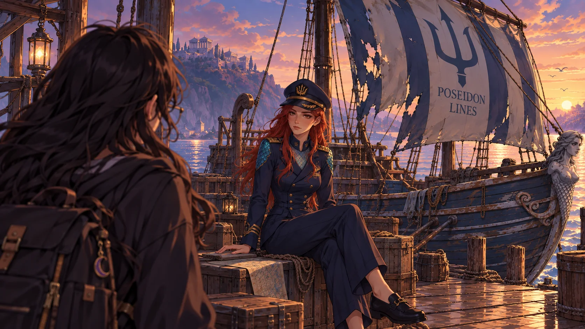
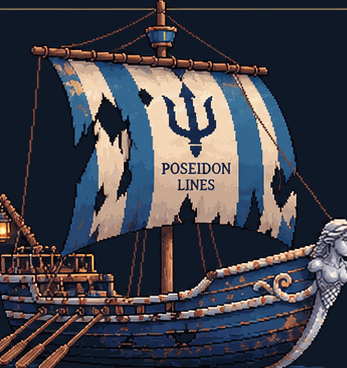
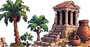
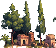
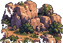
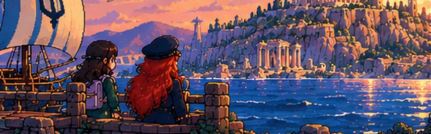
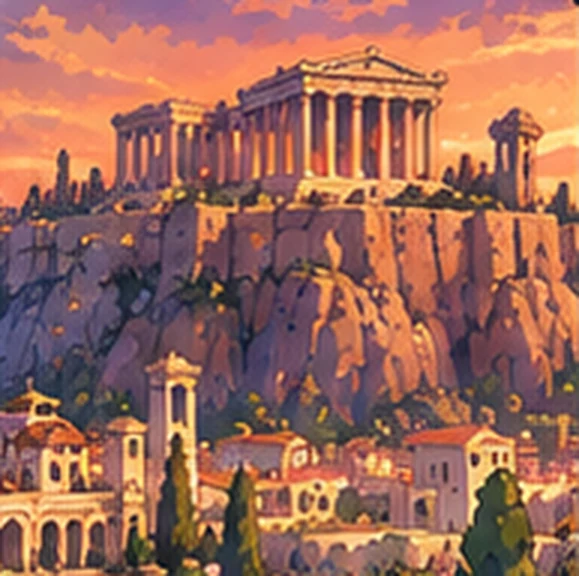
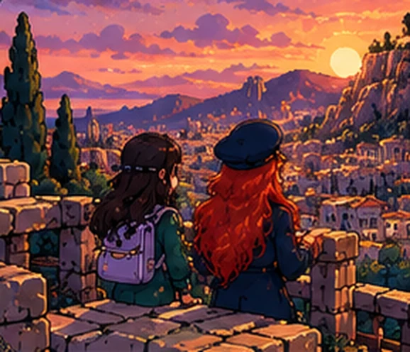
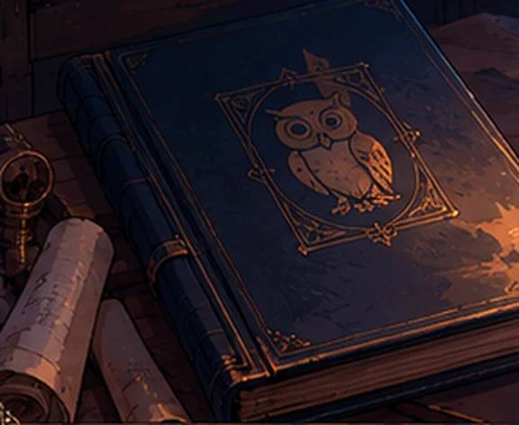

arco 2 · registro 08
Maré dos Sussurros
Algumas travessias começam antes que se veja o mar.
Escritório do Destino
Encaminhamento registrado
- Destinatária
- Sofia
- Destino
- Cais
- Contato
- Ligeia
Apresente-se antes da partida.Algumas travessias começam antes que se veja o mar.
Sofia — Claro.
Nenhum endereço.
Nenhum horário.
Só “cais”.
Porque aparentemente o destino não trabalha com informações úteis.
o cais
Ligeia e a Maré

Foi difícil decidir o que notei primeiro.
Talvez os cabelos, que o vento parecia incapaz de bagunçar direito. Talvez os olhos. Ou talvez fosse simplesmente aquela sensação estranha de que eu deveria continuar olhando para ela mesmo depois de já ter olhado o suficiente.
Perto dos punhos e da gola, pequenos desenhos sobrepostos refletiam a luz. Pareciam escamas. Provavelmente não eram.
A voz dela era baixa. Bonita demais. Não “bonita” de um jeito normal. Havia alguma coisa no som que fazia o resto do cais parecer ficar um pouco mais silencioso.
Sofia — Esse é o Maré dos Sussurros?
Ligeia — É.
Sofia — Ele sempre foi assim?
Ligeia — Não.
Sofia — Ótimo.
Sofia — E nós vamos nele?
Ligeia — Se conseguirmos fazê-lo navegar.
A Maré precisa de reparos antes da partida.
Inicializando travessia
Maré dos Sussurros
- Estado da embarcação
- Não navegável
- Reparos necessários
- 4
Identifique os danos e use os itens corretos para preparar a embarcação.
oficina do cais
Reparo da Maré
Arraste uma peça até o dano correto ou selecione a peça e depois toque no ponto do barco.
Sofia Isso realmente vai flutuar?
Ligeia Vai.

itens disponíveis
Escolha uma peça
Nenhum item selecionado.
- Vela pendente
- Cordame pendente
- Casco pendente
- Leme pendente
embarcação reparada
Maré dos Sussurros pronta para partir.
Ligeia Agora podemos ir.
Sofia “Podemos” ainda parece uma palavra otimista.
primeira parada
Ilha I O Curso das Águas
Faça a água chegar à plantação.
Sofia A água passa a poucos metros da plantação.
Ligeia E mesmo assim não chega até ela.
Sofia Então mudamos o caminho.
Ligeia Exatamente.



Observe os canais e altere as comportas.
curso restabelecido
A água chegou à plantação.
Sofia Mudamos o caminho.
Ligeia A água encontrou outro.
Checkpoint registrado ✓segunda parada
Ilha II A Montanha Imóvel
Encontre a trilha que leva ao topo.
Sofia Parece sempre o mesmo caminho.
Ligeia É. Por isso funciona.
Teclado: ← → ou A/D para andar · espaço, ↑ ou W para pular. No celular, use os botões abaixo da montanha. Se Sofia cair, ela volta ao último ponto seguro.
Algumas trilhas parecem continuar. Nem todas continuam.
topo alcançado ✓
As ruínas estavam lá desde o começo.
Sofia Chegamos.
Ligeia O caminho nunca mudou. Só o olhar.
Checkpoint registrado ✓terceira parada
Ilha III Aquilo que Muda
Nada permanece igual.
Observe, adapte-se e continue em movimento.
Sofia Agora tem água. E agora não tem. E agora tem de novo...
Ligeia Nada permanece.
Sofia Isso não parece muito seguro.
Ligeia Mas tem um ritmo.
Estado A · água alta, fogo apagado
A ilha alterna entre dois estados em ritmo constante. Antes de cada mudança, o cenário pulsa e o aviso acima da ilha muda. Plataformas tracejadas não estão ali agora; se Sofia estiver parada numa plataforma, ela só some quando Sofia sair.
Espere o momento certo. A ilha sempre volta a mudar.
outro lado alcançado ✓
O rio continuava ali. O caminho, não.
Sofia Ela realmente nunca para.
Ligeia E é justamente por isso que chegamos.
Checkpoint registrado ✓quarta parada
Ilha IV O Sopro que Sustenta
Observe os ventos e use as correntes para alcançar o outro lado.
Penhascos, ruínas e um céu enorme. Entre uma pedra e outra, vãos largos demais para qualquer salto.
As faixas claras com setas para cima são correntes de ar: dentro delas, Sofia sobe; fora delas, cai normalmente. Entre na corrente, deixe o vento levar e, lá em cima, ande até o próximo penhasco. Empurrar contra a pedra também funciona: o vento sobe junto do paredão.
Os penhascos não se tocam. Alguma coisa precisa sustentar a travessia.
outro lado alcançado ✓
Os penhascos ficaram para trás.
Sofia O vento está sempre em movimento. A gente não vê, mas ele está aqui.
Ligeia Ele não tem forma, mas faz tudo se mover.
Checkpoint registrado ✓quinta parada
Ilha V Receitas do Universo
Diferentes ingredientes, diferentes resultados.
Experimente, observe e descubra a combinação.
Sofia Não.
Ligeia Você ainda nem sabe o que precisa fazer.
Sofia Tem ingredientes. Tem fogo. E eu estou envolvida. Tenho informações suficientes.
Prateleira
Bancada
Três ingredientes. A ordem não importa. Toque num ingrediente do recipiente para devolvê-lo.
Aguardando ingredientes
Escolha três ingredientes da prateleira.
??? · ??? · ???
Ainda não revelada.
??? · ??? · ???
Ainda não revelada.
receita revelada ✓
Um universo de partes em movimento
Sofia Funcionou!
Ligeia Cada elemento encontrou seu lugar. Agora sim, podemos seguir.
Checkpoint registrado ✓Ainda existe outra receita estável na prateleira, se quiser tentar.
depois da quinta ilha
Última travessia

Era tão baixo que, no início, achei que fosse o vento passando pelas cordas.
Não reconheci a melodia.
Mas reconheci a sensação.
A mesma do cais.
Por alguns segundos, fiquei simplesmente ouvindo.
Esqueci o celular na mão.
Esqueci as ilhas.
Esqueci até o que pretendia perguntar.
Ligeia — Estamos chegando.
Sofia — Como você sabe?
Ligeia — Eu sei.
Atenas aparece ao longe.

destino
Atenas

Sofia — É Atenas?
Ligeia — É onde começam as perguntas difíceis.
Durante muito tempo, aquelas pessoas tinham olhado para água, ar, fogo, movimento, permanência, números, matéria...
E tentado descobrir do que o mundo era feito.
Sofia — Eles encontraram a resposta?
Ligeia — Não.
A costa se aproxima.
Ligeia — Encontraram maneiras de perguntar.
Travessia concluída
Destino alcançado:
AtenasArco 2 — Fim

Novo registro detectado.
Dossiê 001
Acesso bloqueado
Ainda não é o momento.
Travessia iniciada
Primeira parada: Ilha I
rota prevista
Até Atenas
- 01Caispreparação
- 02Reparobloqueado
- 03Ilhasbloqueado
- 04Atenasbloqueado